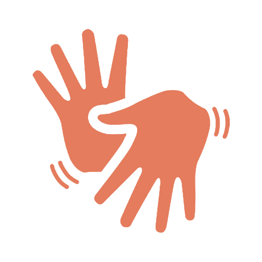
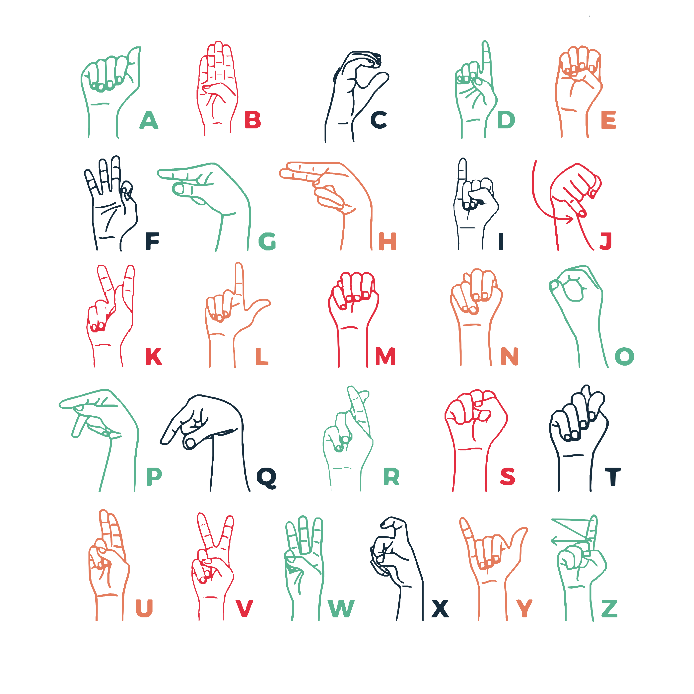

O que é LIBRAS?
Libras é a sigla da Língua Brasileira de Sinais, uma língua de modalidade gestual-visual onde é possível se comunicar através de gestos, expressões faciais e corporais. É reconhecida como meio legal de comunicação e expressão desde 24 de Abril de 2002, através da Lei nº 10.436. A Libras é muito utilizada na comunicação com pessoas surdas, sendo, portanto, uma importante ferramenta de inclusão social.
Os gestos da Libras, também chamados de sinais, são realizados por meio da junção dos movimentos das mãos e das articulações, além de expressões faciais e corporais. Além disso, a Libras é um importante meio de comunicação para que haja interação entre os surdos, e deles com os ouvintes. E é reconhecida como meio legal de comunicação e expressão desde 2002, através da Lei nº 10.436. Veja que, por isso, essa língua é considerada tão importante para a comunidade surda e para a população em geral, pois quebra as barreiras do silêncio que limitam a comunicação entre ambos, de forma que ocorra a inclusão social. Ao contrário do que muitos pensam, a comunicação da Libras não é somente mímica, pois é composta por um alfabeto, e estrutura linguística e gramatical própria, permitindo a quem faz o uso da língua, discutir sobre qualquer assunto. Desta forma, é perceptível que a Libras seja complexa, assim como qualquer outra língua. E, também, não é universal, pois cada país possui sua própria Língua de Sinais, sem falar dos regionalismos, que são as diferenças de linguagem que mudam de acordo com a cultura de cada região.


Alfabeto em LIBRAS
O alfabeto manual em LIBRAS é uma representação visual de cada letra do alfabeto português. Veja a seguir como é feito cada sinal correspondente:
Vídeos e Aulas
Confira alguns vídeos e aulas para aprender mais sobre LIBRAS: